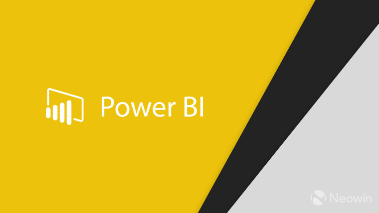

Conducted a thorough analysis of attrition rates within the organization, assessed
employee performance in each department, and effectively visualized the results across
three dashboards using Power BI.


This project represents my effort in cleaning and enhancing data using SQL Server'
The data in this project comprises information related to real estate and sales, which I cleaned and formatted to make it more analytically and operationally valuable.

I prepared a report for a pizza restaurant to evaluate performance, find out peak times
during the days of the week and months, and find out the best and worst types of pizza.
This project was designed using Power BI in two pages. Information was provided to
help business owners make data-based decisions and better understand restaurant
performance.
I conducted an investigation into COVID-19 pandemic data using SQL server. I utilized SQL queries to extract and analyze data related to infection cases, deaths, recoveries, and geographical spread.

In this project, I created an interactive dashboard for analyzing data from 630 professionals in the field of data analysis and technology using Power BI. The dashboard provides a visually appealing and user-friendly way to explore and gain insights from the data.